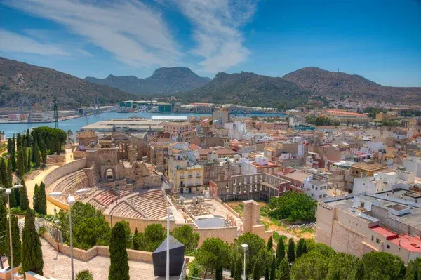

Fue construido entre los años 5 y 1 a.C., en plena época del emperador Augusto, en una ciudad (Carthago Nova) que era una joya del Imperio Romano. Tenía capacidad para unos 7.000 espectadores. Con el paso de los siglos, la zona quedó sepultada bajo capas de construcciones medievales y mercados, hasta el punto de que la ciudad olvidó que debajo de sus pies descansaba un gigantesco teatro clásico, ¡hasta que fue redescubierto por casualidad en 1988!🤯
Tras un impresionante trabajo de recuperación liderado por el arquitecto Rafael Moneo, hoy es un museo de primer orden. No solo se puede visitar la zona arqueológica integrada perfectamente en la ciudad, sino que recuperó su uso original: acoge espectáculos teatrales, conciertos y eventos culturales, permitiendo revivir el ocio de hace dos milenios.